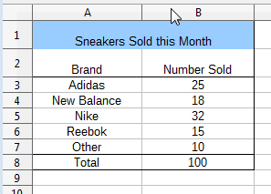
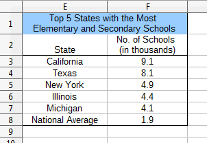
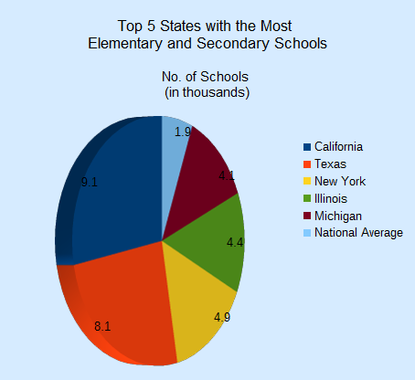
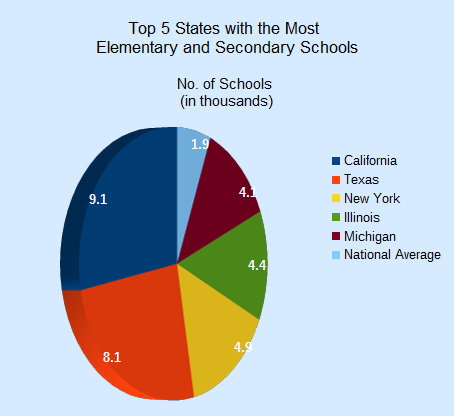
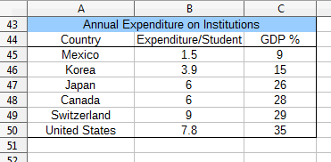
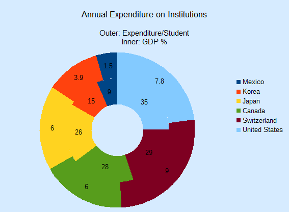
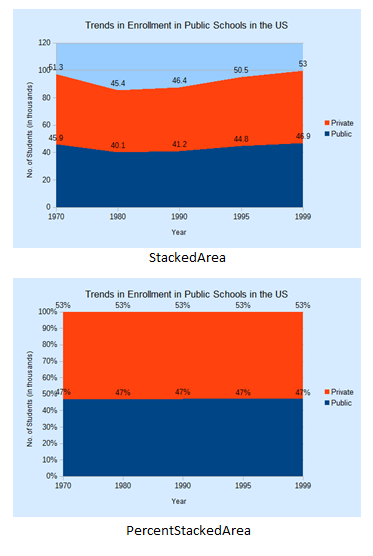

Chapter 30. Bar, Pie, Area, Line Charts¶
Topics
The Bar Chart; The Pie Chart; 3D Pie; Donuts; The Area Chart; The Line Chart: multiple lines
Example folders: "Chart2 Tests" and "Utils"
This chapter continues using the Chart2Views.java example from the previous chapter, but looks at how bar, pie (including 3D and donut versions), area, and line charts can be generated from spreadsheet data. The relevant lines of Chart2Views.java are:
// part of Chart2Views.java
public static void main(String args[])
{
XComponentLoader loader = Lo.loadOffice();
XSpreadsheetDocument doc = Calc.openDoc(CHARTS_DATA, loader);
GUI.setVisible(doc, true);
XSpreadsheet sheet = Calc.getSheet(doc, 0);
// ---- use different chart templates ----
barChart(doc, sheet); // see section 1
// pieChart(doc, sheet); // section 2
// pie3DChart(doc, sheet); // section 2.1
// donutChart(doc, sheet); // section 2.3
// areaChart(doc, sheet); // section 3
// lineChart(doc, sheet);
// linesChart(doc, sheet); // section 4
: // more chart examples
Lo.waitEnter();
Lo.closeDoc(doc);
Lo.closeOffice();
} // end of main()
1. The Bar Chart¶
A bar chart is generated by barChart() in Chart2Views.java using the "Sneakers Sold this Month" Table from Figure 1.

Figure 1. The "Sneakers Sold this Month" Table.
The resulting chart is shown in Figure 2.

Figure 2. The Bar Chart for the Table in Figure 1.
It's informative to compare the bar chart in Figure 2 with the column chart for the same data in Figure 2 of Chapter 29. The data bars and axes have been swapped, so the x-axis in the column chart is the y-axis in the bar chart, and vice versa.
barChart() is:
// in Chart2Views.java
private static void barChart(XSpreadsheetDocument doc,
XSpreadsheet sheet)
{
CellRangeAddress rangeAddr = Calc.getAddress(sheet, "A2:B8");
XChartDocument chartDoc =
Chart2.insertChart(sheet, rangeAddr, "B3", 15, 11, "Bar");
Calc.gotoCell(doc, "A1");
Chart2.setTitle(chartDoc, Calc.getString(sheet, "A1"));
Chart2.setXAxisTitle(chartDoc, Calc.getString(sheet, "A2"));
Chart2.setYAxisTitle(chartDoc, Calc.getString(sheet, "B2"));
Chart2.rotateXAxisTitle(chartDoc, 90);
// rotate vertical x-axis
} // end of barChart()
Although the axes have been swapped in the chart drawing, the API still uses the same indices to refer to the axes in XCoordinateSystem.getAxisByDimension(). This means that "x-axis" is the vertical axis in a bar chart, and "y-axis" the horizontal. This is most apparent in the last line of barChart():
Chart2.rotateXAxisTitle(chartDoc, 90);
This causes the "x-axis" title to rotate 90 degrees counter-clockwise, which affects the "Brand" string on the vertical axis of the chart (see Figure 2).
2. The Pie Chart¶
pieChart() in Chart2Views.java utilizes the "Top 5 States with the Most Elementary and Secondary Schools" table in "chartsData.ods" (see Figure 3) to generate the pie chart in Figure 4.

Figure 3. The "Top 5 States" Table.

Figure 4. A Pie Chart for the Table in Figure 3.
pieChart() is:
// in Chart2Views.java
private static void pieChart(XSpreadsheetDocument doc,
XSpreadsheet sheet)
{
CellRangeAddress rangeAddr = Calc.getAddress(sheet, "E2:F8");
XChartDocument chartDoc =
Chart2.insertChart(sheet, rangeAddr, "B10", 12, 11, "Pie");
// Pie, PieAllExploded
Calc.gotoCell(doc, "A1");
Chart2.setTitle(chartDoc, Calc.getString(sheet, "E1"));
Chart2.setSubtitle(chartDoc, Calc.getString(sheet, "F2"));
Chart2.viewLegend(chartDoc, true);
} // end of pieChart()
Chart2.setSubtitle() displays the secondary heading in the chart; there's little difference between it and the earlier setTitle():
// in the Chart2 class
public static void setSubtitle(XChartDocument chartDoc,
String subtitle)
{ XDiagram diagram = chartDoc.getFirstDiagram();
XTitled xTitled = Lo.qi(XTitled.class, diagram);
XTitle xtitle = createTitle(subtitle);
if (xtitle != null) {
xTitled.setTitleObject(xtitle);
setXTitleFont(xtitle, "Arial", 12);
}
} // end of setSubtitle()
The XTitled reference for the subtitle is obtained from XDiagram, whereas the chart title is part of XChartDocument.
2.1. More 3D Pizzazz¶
For some reason people like 3D pie charts, so pie3DChart() in Chart2Views.java produces one (see Figure 5) using the same table as the 2D version.

Figure 5. A 3D Pie Chart for the Table in Figure 3.
pie3DChart() is the same as pieChart() except that the "ThreeDPie" template is used:
// in Chart2Views.java
private static void pie3DChart(XSpreadsheetDocument doc,
XSpreadsheet sheet)
{ CellRangeAddress rangeAddr = Calc.getAddress(sheet, "E2:F8");
XChartDocument chartDoc =
Chart2.insertChart(sheet, rangeAddr, "B10", 12, 11,
"ThreeDPie");
// ThreeDPie, ThreeDPieAllExploded
Calc.gotoCell(doc, "A1");
Chart2.setTitle(chartDoc, Calc.getString(sheet, "E1"));
Chart2.setSubtitle(chartDoc, Calc.getString(sheet, "F2"));
Chart2.viewLegend(chartDoc, true);
: // more code explained in a moment
} // end of pie3DChart()
The drawback of 3D pie charts is the shape distortion caused by the perspective. For example, the red segment in the foreground of Figure 5 seems bigger than the dark blue segment at the back but that segment is numerical larger.
The default rotation of a 3D pie is -60 degrees around the horizontal so its bottom edge appears to extend out of the page, and 0 degrees rotation around the vertical.
These can be changed by modifying the "RotationHorizontal" and "RotationVertical" properties of the Diagram service. For example:
// part of pie3DChart() in Chart2Views.java...
XDiagram diagram = chartDoc.getFirstDiagram();
Props.setProperty(diagram, "RotationHorizontal", 0);
// no horizontal rotation
Props.setProperty(diagram, "RotationVertical", -45);
// -ve rotates left edge out of page
This changes the pie chart's appearance to be as in Figure 6.

Figure 6. A Rotated 3D Pie Chart for the Table in Figure 3.
The easiest way to see the current values for the diagram's properties is to add a call to Props.showObjProps() to the code above:
Props.showObjProps("Diagram", diagram);
2.2. Changing the Data Point Labels¶
Two problems with Figures 5 and 6 are the small data point labels and their default font color (black) which doesn't stand out against the darker pie segments.
These issues can be fixed by changing some of the font related properties for the data points. This means a return to the DataSeries service shown in Figure 7.

Figure 7. The DataSeries Service and XDataSeries Interface.
The DataPointProperties class appears twice in Figure 7 because it allows the data point properties to be changed in two ways. The DataPointProperties class associated with the DataSeries service allows a property change to be applied to all the points collectively. The DataPointProperties class associated with a particular point allows a property to be changed only in that point.
For example, the former approach is used to change all the data point labels in the pie chart to 14 pt, bold, and white:
// end of pie3DChart() in Chart2Views.java...
:
// change all the data points to be bold white 14pt
XDataSeries[] ds = Chart2.getDataSeries(chartDoc);
Props.setProperty(ds[0], "CharHeight", 14.0);
Props.setProperty(ds[0], "CharColor", Calc.WHITE);
Props.setProperty(ds[0], "CharWeight",
com.sun.star.awt.FontWeight.BOLD);
The changes to the chart are shown in Figure 8.

Figure 8. A 3D Pie Chart with Changed Data Point Labels.
The second approach is employed to emphasize the "National Average" data point label, which is the last one in the series:
// end of pie3DChart() in Chart2Views.java...
:
// change only the last data point to be bold white 14pt
XPropertySet props = Chart2.getDataPointProps(chartDoc, 0, 5);
if (props != null) {
Props.setProperty(props, "CharHeight", 14.0);
Props.setProperty(props, "CharColor", Calc.WHITE);
Props.setProperty(props, "CharWeight",
com.sun.star.awt.FontWeight.BOLD);
}
This produces the chart shown in Figure 9, where only the National Average label is changed.

Figure 9. A 3D Pie Chart with One Changed Data Point Label.
Chart2.getDataPointProps() takes three arguments – the chart document, the index of the data series, and the index of the data point inside that series. The pie chart uses six data points, so a valid index will be between 0 and 5.
If a matching data point is found by Chart2.getDataPointProps() then a reference to its properties is returned, allowing that point to be modified:
// in the Chart2 class
public static XPropertySet getDataPointProps(
XChartDocument chartDoc,
int seriesIdx, int idx)
{ XPropertySet[] propsArr =
getDataPointsProps(chartDoc, seriesIdx);
if (propsArr == null)
return null;
if ((idx < 0) || (idx >= propsArr.length)) {
System.out.println("No data at index " + idx +
"; use 0 to " + (propsArr.length-1));
return null;
}
return propsArr[idx];
} // end getDataPointProps()
A two-argument version of Chart2.getDataPointProps() returns the properties for all the data points in a series:
// in the Chart2 class
public static XPropertySet[] getDataPointsProps(
XChartDocument chartDoc, int seriesIdx)
// get all the properties for the data in the specified series
{
XDataSeries[] dataSeriesArr = getDataSeries(chartDoc);
if ((seriesIdx < 0) || (seriesIdx >= dataSeriesArr.length)) {
System.out.println("Series index is out of range");
return null;
}
ArrayList<XPropertySet> propsList =
new ArrayList<XPropertySet>();
int idx = 0;
XPropertySet props = null;
do {
try {
props = dataSeriesArr[seriesIdx].getDataPointByIndex(idx++);
if (props != null)
propsList.add(props);
}
catch(com.sun.star.lang.IndexOutOfBoundsException e) {
break;
}
} while (props != null);
if (propsList.size() == 0) {
System.out.println("No Series at index " + seriesIdx);
return null;
}
XPropertySet[] propsArr = new XPropertySet[propsList.size()];
for (int i=0; i < propsList.size(); i++)
propsArr[i] = propsList.get(i);
return propsArr;
} // end getDataPointsProps()
Chart2.getDataSeries() is called to get the data series for the chart type as an array.
This array is iterated over, collecting the property sets for each data point by calling XDataSeries.getDataPointByIndex().
2.3. Anyone for Donuts?¶
If a table has more than one column of data then a "Donut" chart can be used to show each column as a ring.
donutChart() in Chart2Views.java utilizes the "Annual Expenditure on Institutions" table in "chartsData.ods" (see Figure 10) to generate the donut chart with two rings in Figure 11.

Figure 10. The "Annual Expenditure on Institutions" Table.

Figure 11. A Donut Chart for the Table in Figure 10.
donutChart() is:
// in Chart2Views.java
private static void donutChart(XSpreadsheetDocument doc,
XSpreadsheet sheet)
{ CellRangeAddress rangeAddr = Calc.getAddress(sheet, "A44:C50");
XChartDocument chartDoc =
Chart2.insertChart(sheet, rangeAddr, "D43", 15, 11, "Donut");
// Donut, DonutAllExploded, ThreeDDonut
Calc.gotoCell(doc, "A48");
Chart2.setTitle(chartDoc, Calc.getString(sheet, "A43"));
Chart2.viewLegend(chartDoc, true);
Chart2.setSubtitle(chartDoc, "Outer: " +
Calc.getString(sheet, "B44") + "\n" +
"Inner: " + Calc.getString(sheet, "C44"));
} // end of donutChart()
The only thing of note is the use of a more complex string for Chart2.setSubtitle() to display information about both rings.
3. The Area Chart¶
areaChart() in Chart2Views.java utilizes the "Trends in Enrollment in Public Schools in the US" table in "chartsData.ods" (see Figure 12) to generate the area chart in Figure 13.

Figure 12. The "Annual Expenditure on Institutions" Table.

Figure 13. An Area Chart for the Table in Figure 12.
areaChart() is:
// in Chart2Views.java
private static void areaChart(XSpreadsheetDocument doc,
XSpreadsheet sheet)
{
CellRangeAddress rangeAddr = Calc.getAddress(sheet, "E45:G50");
XChartDocument chartDoc =
Chart2.insertChart(sheet, rangeAddr, "A52", 16, 11, "Area");
// Area, StackedArea, PercentStackedArea
Calc.gotoCell(doc, "A43");
Chart2.setTitle(chartDoc, Calc.getString(sheet, "E43"));
Chart2.viewLegend(chartDoc, true);
Chart2.setXAxisTitle(chartDoc, Calc.getString(sheet, "E45"));
Chart2.setYAxisTitle(chartDoc, Calc.getString(sheet, "F44"));
Chart2.rotateYAxisTitle(chartDoc, 90);
} // end of areaChart()
If the "Area" template is replaced by "StackedArea" or "PercentStackedArea" then the two charts in Figure 14 are generated.

Figure 14. Stacked and Percentage Stacked Area Charts for the Table in Figure 12.
4. The Line Chart¶
linesChart() in Chart2Views.java utilizes the "Trends in Expenditure Per Pupil" table in "chartsData.ods" (see Figure 15) to generate two lines marked with symbols in Figure 16.

Figure 15. The "Trends in Expenditure Per Pupil" Table.

Figure 16. Line Charts for the Table in Figure 15.
linesChart() is:
// in Chart2Views.java
private static void linesChart(XSpreadsheetDocument doc,
XSpreadsheet sheet)
{
CellRangeAddress rangeAddr = Calc.getAddress(sheet, "E27:G39");
XChartDocument chartDoc = Chart2.insertChart(sheet,
rangeAddr, "A40", 22, 11, "LineSymbol");
// Line, LineSymbol, StackedLineSymbol
Calc.gotoCell(doc, "A26");
Chart2.setTitle(chartDoc, Calc.getString(sheet, "E26"));
Chart2.viewLegend(chartDoc, true);
Chart2.setXAxisTitle(chartDoc, Calc.getString(sheet, "E27"));
Chart2.setYAxisTitle(chartDoc, "Expenditure per Pupil");
Chart2.rotateYAxisTitle(chartDoc, 90);
Chart2.setDataPointLabels(chartDoc, Chart2.DP_NONE);
// too crowded for data points
} // end of linesChart()
Chart2.setDataPointLabels() switches off the displaying of the numerical data above the symbols so the chart is less cluttered.
There are many different line chart templates, as listed in Table 1 of Chapter 28. The "Line" template differs from "LineSymbol" by not including symbols over the data points.